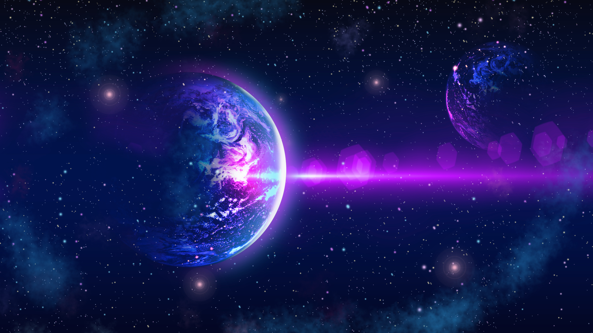
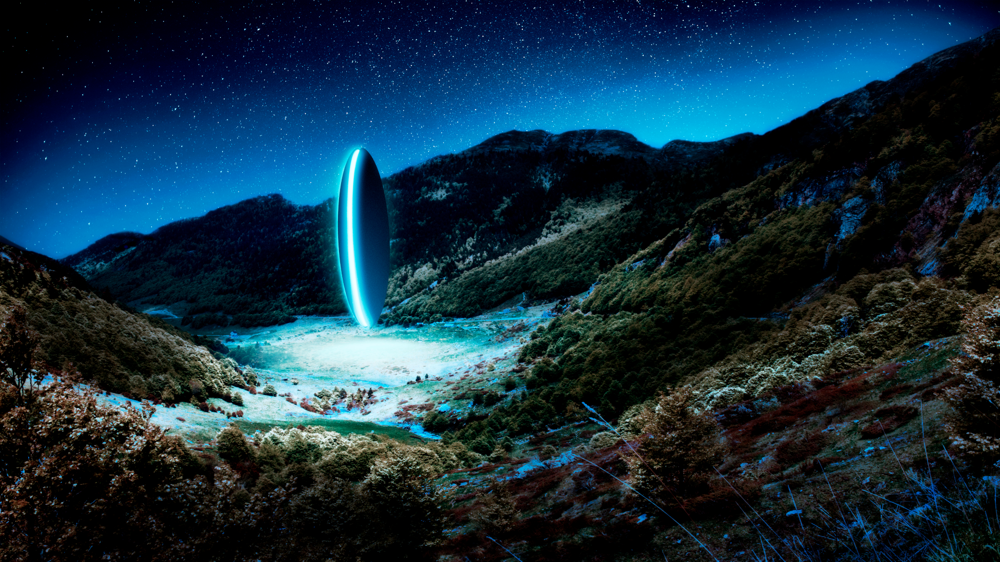

Em Timeless Hunter, o jogador assume o papel de um caçador atemporal em busca de um artefato lendário que controla o tempo e o espaço. Navegue por planetas exóticos, enfrente inimigos perigosos e autoridades galácticas, faça escolhas astutas e corajosas que afetam o resultado da história.